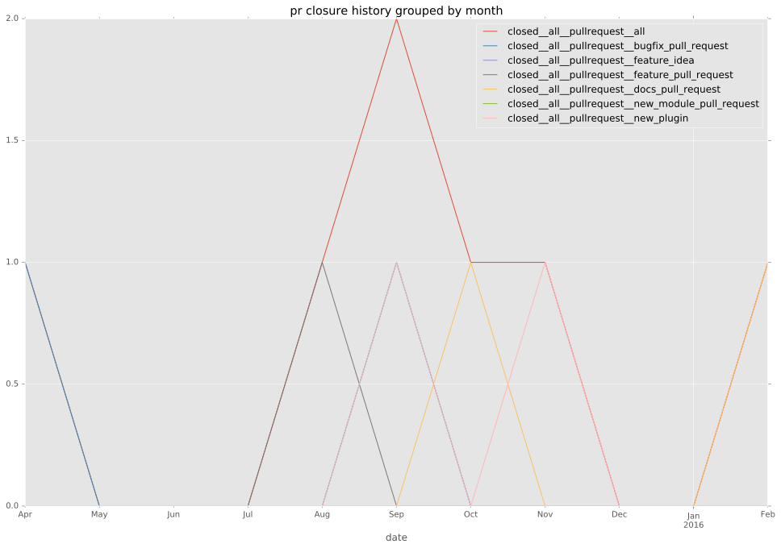

authors
- joelthompson
- nand0p
maintainers
- joelthompson
contributors
- joelthompson : 34 commits
- nand0p : 10 commits
- wimnat : 8 commits
- sivel : 3 commits
- abadger : 3 commits
total issue counts
pullrequest: 6
docs pull request: 1
bugfix pull request: 3
issue: 6
new plugin: 2
bug report: 6
issue history
pullrequest history

days open by issue type
all
count: 17
std: 20.2950660477
min: 0
max: 49
median: 9.0
mean: 19.5294117647
pullrequest
count: 0
std: nan
min: nan
max: nan
median: nan
mean: nan
docs pull request
count: 2
std: 0.0
min: 0
max: 0
median: 0.0
mean: 0.0
bugfix pull request
count: 6
std: 17.4890441896
min: 9
max: 47
median: 36.0
mean: 30.6666666667
issue
count: 0
std: nan
min: nan
max: nan
median: nan
mean: nan
new plugin
count: 3
std: 2.30940107676
min: 3
max: 7
median: 7.0
mean: 5.66666666667
bug report
count: 6
std: 24.2273949625
min: 0
max: 49
median: 18.5
mean: 21.8333333333
closures grouped by total days open